The Absolute Value of a number is the distance a number is from zero on the number line.
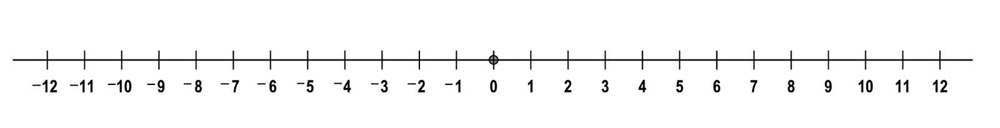
Because distance is always a positive number, the negative numbers are considered as a distance measurement which results in a positive answer. Therefore, the Absolute Value function takes all numbers and turns them positive.
For example, the integer negative three is 3 spaces away from zero. The absolute value of negative three is positive three.
Example:
|-3| = 3
The absolute value symbol looks like 2 parallel lines:
| |
Any number inbetween the vertical bars is automatically turned positive.
Example:
| -4 | = 4
| -3 | = 3
| -2 | = 2
| -1 | = 1
| 0 | = 0
| 1 | = 1
| 2 | = 2
| 3 | = 3
| 4 | = 4
This pattern continues for all positive or negative numbers, including decimals and fractions.
The graph of an Absolute Value function always maintains a "V"-shaped graph.
You can use a Table of Values to graph any absolute value equation.
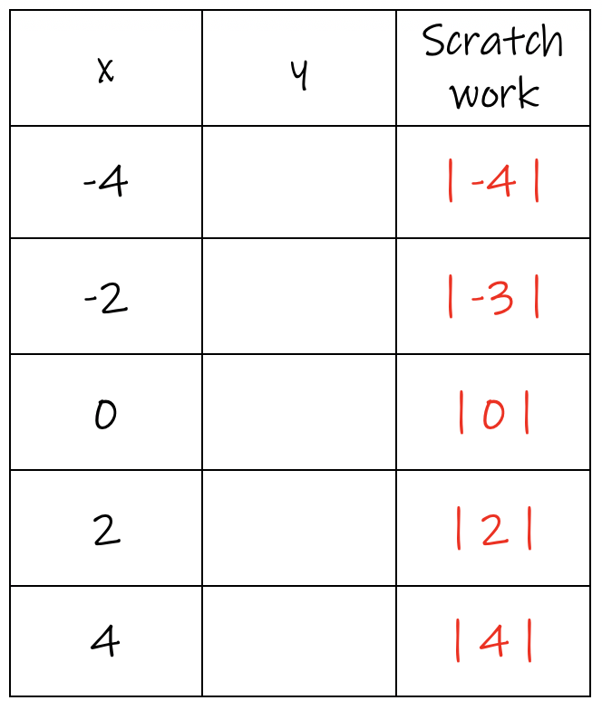 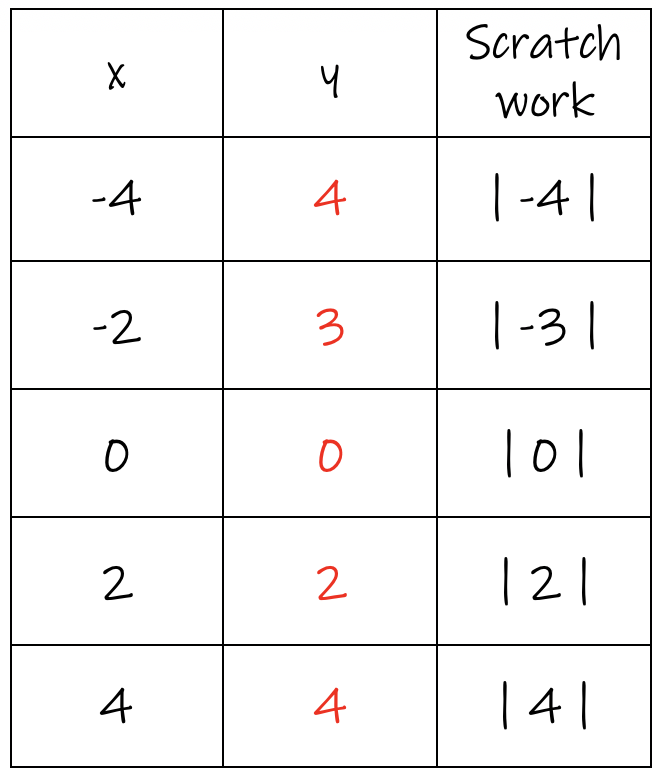 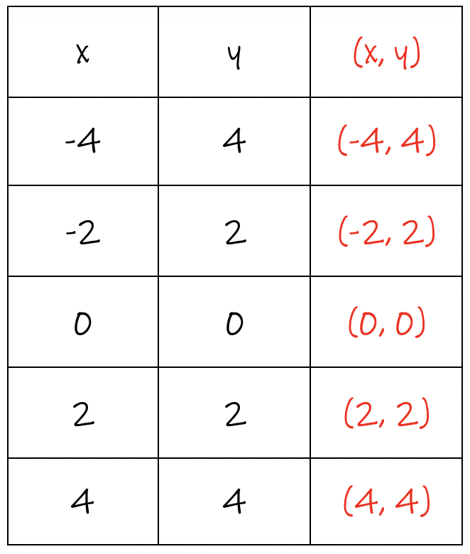 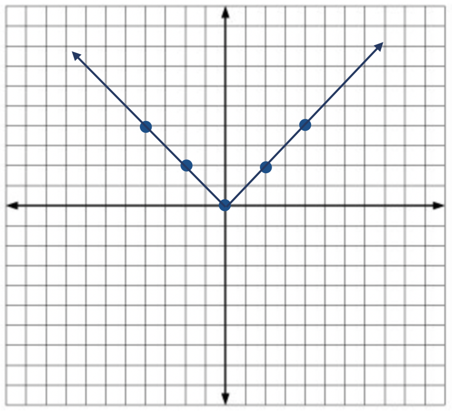
Example: Graph y = | x + 2 |
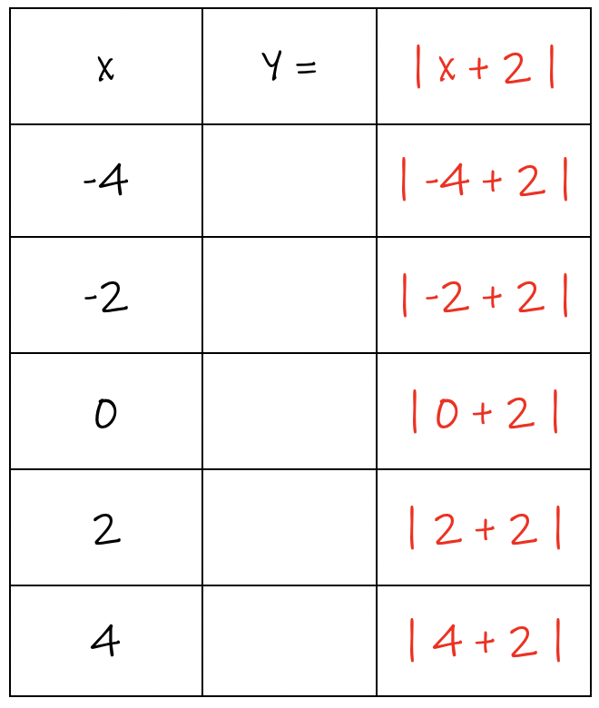 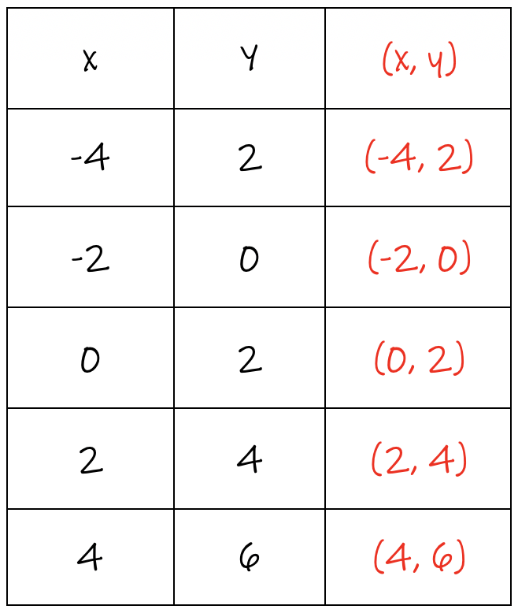 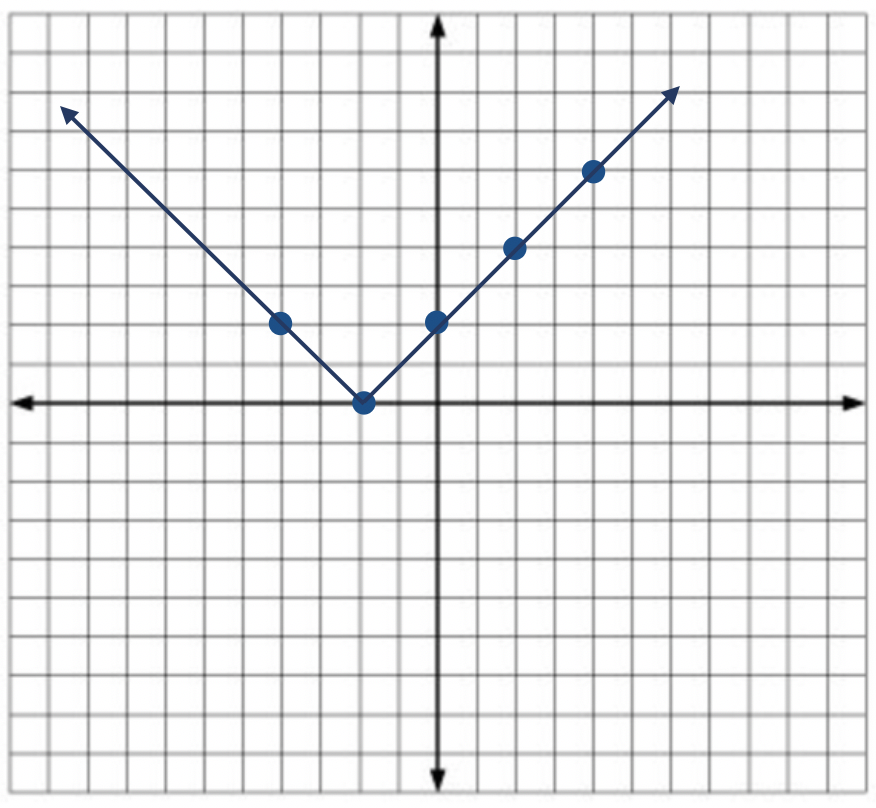
Example: Graph y = | x + 4 |
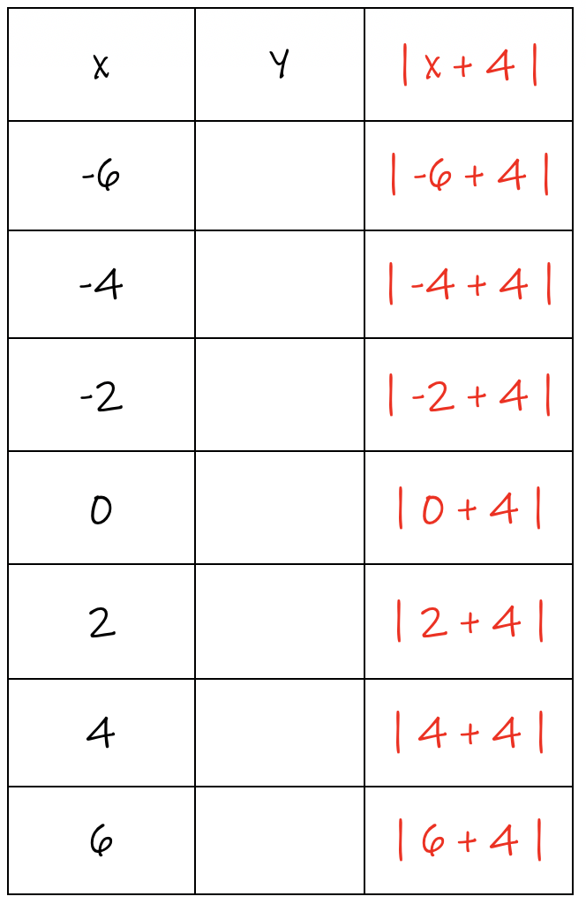 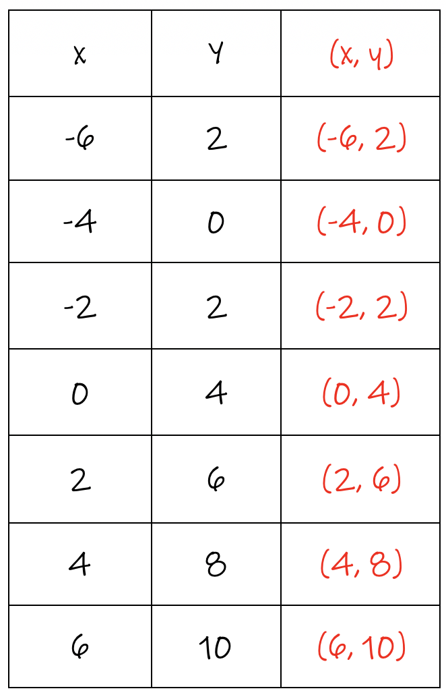 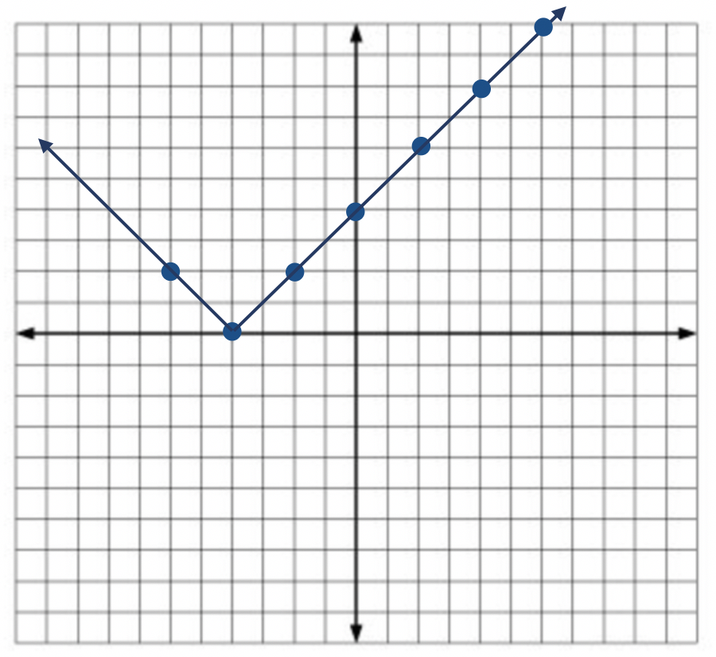